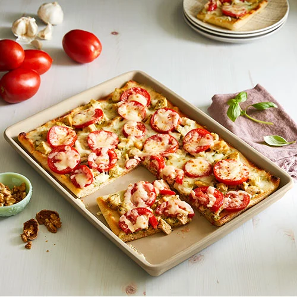

Home
Chicken Pesto Flatbread Pizza

Description
Servings: 4 // Prep Time: 10 minutes // Cook Time: 15-20 minutes // Total Time: ~25 minutes
Fast and easy to make, this flabread pizza is a must know recipe to have! This delicious, Tuscan inspired pizza can be put together in 25 minutes or less!
Spoil yourself by using fresh ingredients like fresh mozzarella, homemade pesto and flatbread, and cooking your own chicken. Or, save time by using pre-shredded mozzarella, store bought pesto and flatbread, and left-over or rotisserie chicken. This recipe will be a nice mixture of both those options, but feel free to modify it as you see fit!
Ingredients
- 2 premade flatbreads; any shape, but I usually use rectangular
- 6 tablespoons basil pesto; homemade or store bought
- 1 cup grape or snacking tomatoes
- 1 pound chicken breast
- 1 1/2 cup mozzarella
- 1 tablespoon olive oil
- Salt and pepper, to taste
- Optional;fresh basil for garnish
Steps
- Heat oven to 400 degrees Fahrenheit. Heat a skillet with olive oil over medium heat.
- Season chicken breast with salt and pepper on both sides. Cook in skillet until an internal temperature of 165 degrees; about 6-8 minutes per side. Set aside.
- While the chicken cooks, cut the tomatoes into thin slices, width wise. Cut mozzarella cheese into chunks or shred.
- Once chicken has cooled enough to handle, cut into chunks or shred.
- Line a large baking sheet with foil or parchment paper and place the 2 flatbreads side-by-side on them. Divide the pesto between the two flatbreads and spread evenly.
- Arrange chicken pieces over the pesto covered flatbread, then sprinkle sliced tomatoes over top.
- Top everything with the chunked or shredded mozzarella, sprinkling it evenly.
- Place the baking sheet in the oven and bake for 10-12 minutes, or until the cheese is melted and the edges of the flatbread are crispy. Remove from over and cut into desired slices.
- Top with optional garnishes, like balsamic glaze, additional olive oil, or torn basil leaves, and serve.
Check Out These Other Recipes
Home